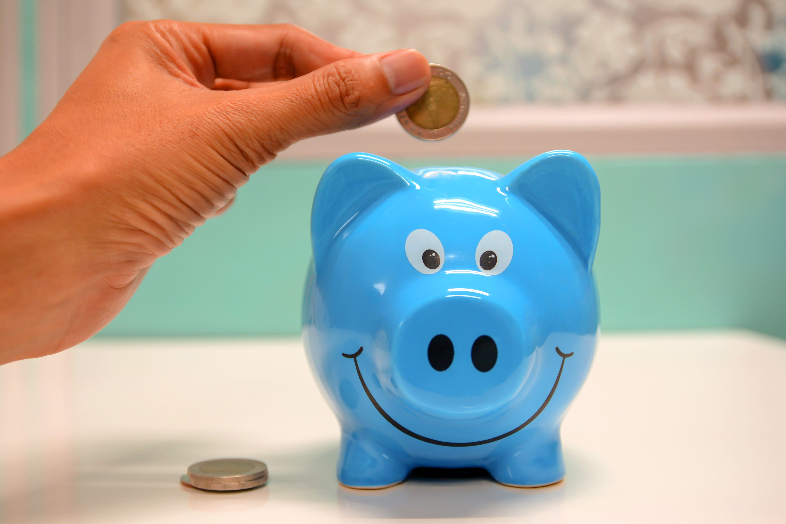

Vous manquez d'argent ?
Venez à l'épicerie solidaire d'Agen ! Situé au 717 avenue de gaillard.
Venez à l'épicerie solidaire d'Agen ! Situé au 717 avenue de gaillard.
Suivants les arrivages, vous trouverez des produits frais : fruits et légumes de saisons, yaourts, viandes, poissons, oeufs, des plats préparés.
Des produits secs : conserves, chocolat, pains, céréales, lait, huile, pâtes, riz, boissons, produits pour bébé (couches, lait), miel...
Vous trouverez aussi du parfum, des produits cosmétiques, et plein de vêtements de saison (oui oui, nous parlons bien de vêtements et non de fruits et légumes cette fois).
Nous sommes ouvert tous les jours de 09h00 à 12h00 sauf le dimanche.
Toute notre équipe vous accueillera avec le sourire, dans une ambiance chaleureuse.
Nous sommes engagé avec la mairie pour aider les familles ukrainiennes.
Si vous souhaitez déposer des vêtements en bon état, nous les récupérons et les redistribuerons.
Nous vous remercions pour votre générosité ! 😀 👍🏻